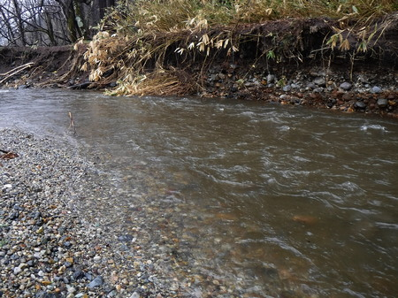
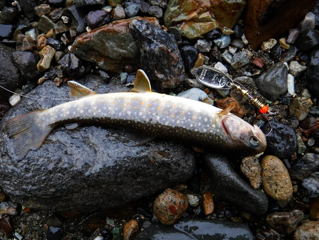
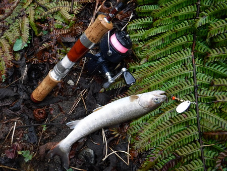
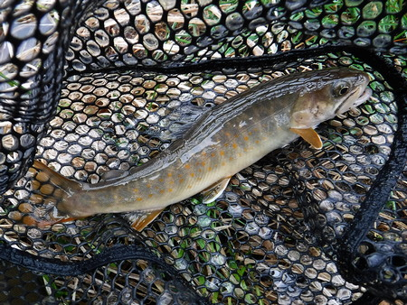
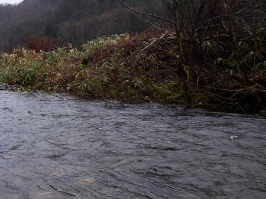
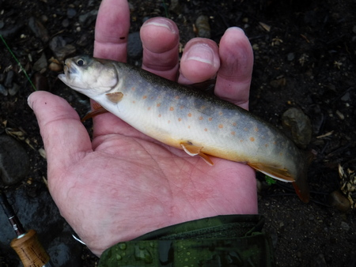
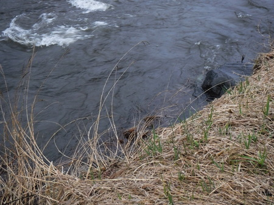
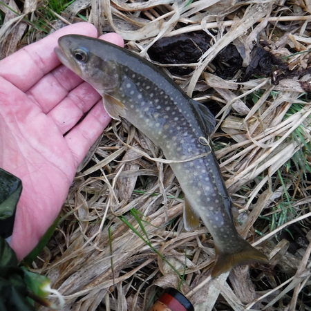

釣行日誌 故郷編
2021/04/17 雨中単独突撃
毎週末の釣行のパートナーである叔父が、ギックリ腰で今季は絶望！となってしまったので、今日は単独釣行。朝、7:50 にレンタカーを借り出し、荷物を積み込んで 8:10 に出発。
小雨のぱらつく中、交通量の少ない地方の高速道路で、早る心を鎮ませつつアクセルを踏み込む。（笑）
下流部の本流は異常なし、平水状態。とある山岳渓流を渡る時の橋は大洪水状態。目的地に着いてみると、この川も濁りが激しく、他には誰も釣り人は居ない。
『やった～！』
欣喜雀躍して、バス停のシェルターにて雨宿りしながら身支度を整える。２週間前に１尾出たポイントから入るが、今日は反応なし。この濁りでは.....と、目立つ銀色のメップスをゆっくり逆引きして攻めてみる。
少し下った瀬の尻から小さいのが出てくれた。

ランディングとリリースのついでに測ってみると、水温は12度。

先日伯父がばらしたという 25cm 級は、聞いてきた通りのポイントを攻めたが出ない。何故だ？
さらに釣り下り、高い石垣の上から、対岸斜め下流方向の葦の根元に打ち込んで、リトリーブを始める。直後にちょっとした１尾がヒット。増水した流れを利用してかなり引きまくる。慎重に下流に歩みを進め、石垣を降りて、丁寧にランディング。水の中で写真を撮るべきであった。反省。


今日は浮気をせずに、この沢一本と決めて釣り通すことにした。特に大きいのは出なかったが、入ってみたポイントでは必ず釣れた。読みが当たって嬉しかった。
ところが、視認性が良いとの謳い文句だった蛍光ピンク色のナイロンラインが、いつものブランドの蛍光イエローに比べ、非常に見にくくて苦労した。やはり、メーカーのキャッチコピーではなく、現場で使ってナンボのものだなぁと反省させられた。
Cabela's ブランドの安価な中国製ストッキングタイプ・ヒップウェーダーの修理は完璧、快適な遡行を楽しむ。釣り下りだけど。怪しい箇所には、これでもか！とクリアボンドを塗り込めたので、水漏れは無い。
すると、橋の上手で、おじさんが車から降りて見に来た。おじさんに見えたが、案外僕より若いかもしれない（笑）きっと釣りが好きなんでしょうね。もっとも、こんな大雨の増水時に釣りをしてるのはどんなバカなのか？ と興味を持たれたのかもしれないが.....
アシの茂みやら、冠水した潅木の根本を何度もしつこく引いていると、増水して緩い流れに逃げ込んだイワナが出てくれた。




ヘッドランプを装着して、憑かれたように 18:00まで粘る。あたりは真っ暗になったが、とうとう大物は出ずじまい。
ゆっくり下道をドライブして、午前様で自宅に帰着、風呂へ入って爆睡。翌朝、レンタカーを返却してからもう一眠り。
春眠暁を覚えず、の諺どおりであった。
釣行日誌 故郷編 目次へ
サイトマップ
ホームへ
お問い合わせ